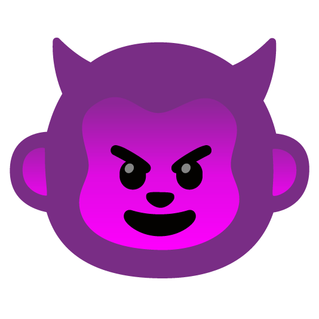

E muitos se perguntam, confusos, quase perturbados:
Por que o Carioca não escreve apenas palavras, quando pode lançar ao chat um

, dominando a tela como uma ofensiva relâmpago?Os fracos chamam de exagero. Os medianos chamam de infantilidade. Os dollynhos chamam de "cringe".
Mas o Carioca chama de linguagem estratégica avançada.
Pois onde o jogador comum digita, o Carioca impacta.
O emoji gigante não é ornamento — é presença psicológica materializada.
É impossível ignorá-lo. Ele interrompe raciocínios, quebra discursos, invade a atenção.
Assim como um push bem cronometrado, ele não pede espaço — toma.
Enquanto os outros enviam reações tímidas, pequenos ícones perdidos na rolagem do chat,
o Carioca despeja um sticker monstruoso que paira sobre a conversa como superioridade aérea incontestável.
Não é comunicação. É imposição.
Cada ampliado carrega uma mensagem silenciosa:
"Estou confortável." "Estou me divertindo." "Estou vencendo."
Pois nada desestabiliza mais o adversário do que ver alguém esmagando o lobby enquanto reage com deboche visual em alta escala.
O emoji gigante cumpre aquilo que palavras longas não conseguem:
Humilha sem argumentar. Provoca sem explicar. Desestabiliza sem esforço.
É micro psicológico.
E há ainda o fator estético-hierárquico.
Jogadores comuns usam emojis pequenos. Jogadores inseguros evitam chamar atenção.
Mas o Carioca amplia.
Expande. Exagera. Ocupa espaço digital como ocupa território no mapa.
Pois até no chat o Carioca recusa a mediocridade do "tamanho padrão".
Se é para reagir, que seja de forma impossível de ignorar.
Se é para rir, que o riso tenha escala.
Se é para debochar, que o deboche tenha largura de combat width emocional.
E assim o sticker se torna assinatura.
Marca registrada. Extensão da aura.
O não é apenas um emoji — é o retrato visual do estado mental do Carioca:
Confiante. Despreocupado. Perigosamente confortável enquanto o caos se instala.
E os que se irritam com o tamanho, na verdade não se irritam com o sticker.
Irritam-se com aquilo que ele simboliza:
Alguém tão seguro de seu domínio que pode transformar até a reação mais trivial em espetáculo psicológico.
Pois no universo do Carioca,
até o emoji precisa refletir uma verdade fundamental:
Ser pequeno nunca foi uma opção.